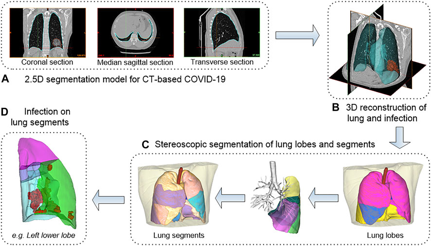
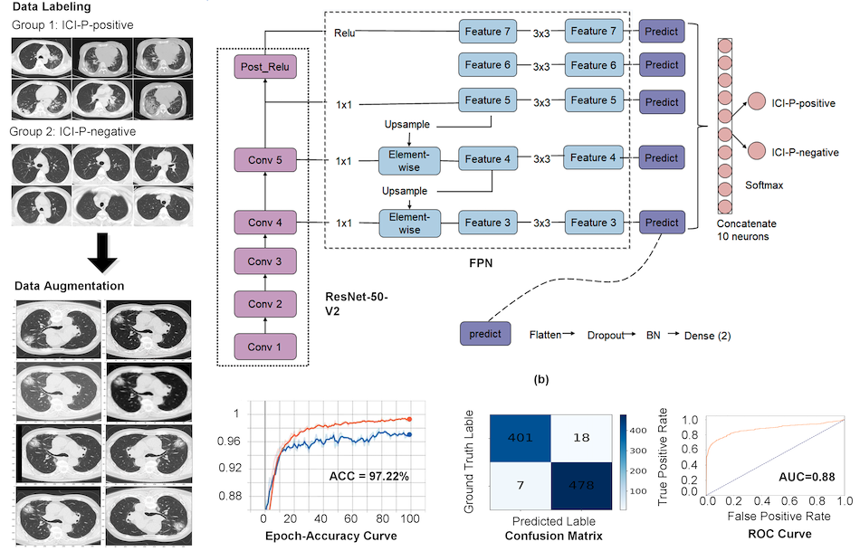
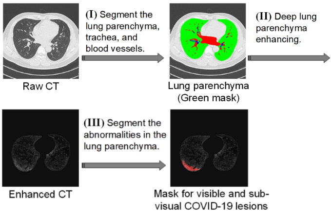
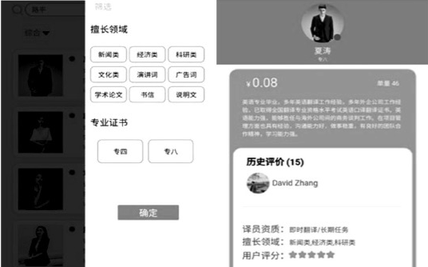
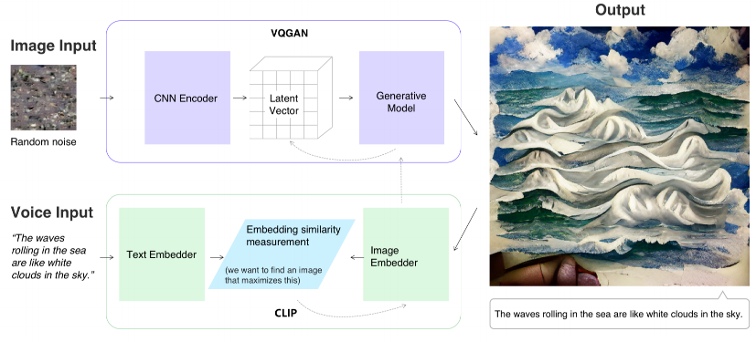
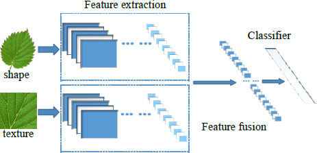
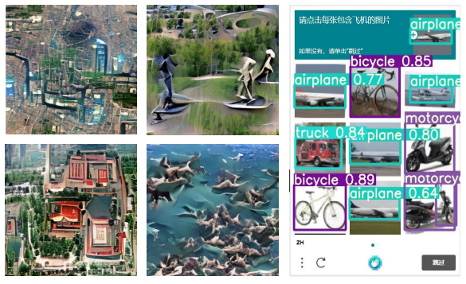
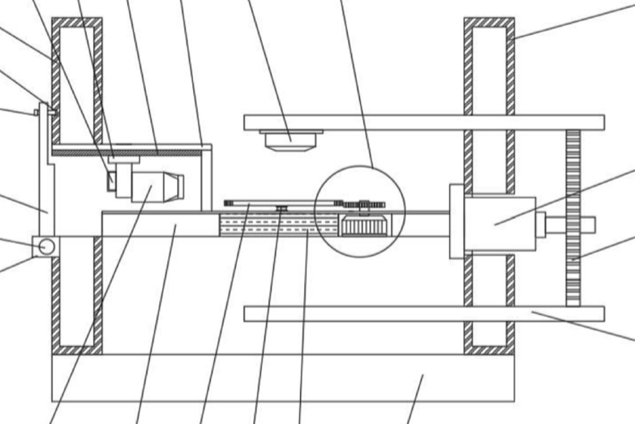
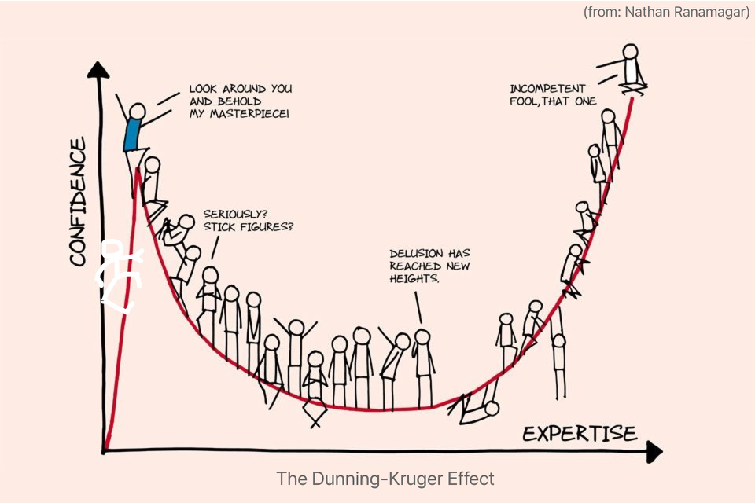

Ruikai LinM.Sc. Student
Dept of Biomedical Informatics
E-mail: rklin [at] aliyun [dot] com
|
|


🔥 Recent Developments: [Calendar]
1. Prepara for PhD application. I am looking for like-minded people. If you are also thinking of pursuing a PhD in computer vision, medical image analysis or AI in healthcare etc., email me!
2. Ongoing collaboration with Prof Andrew Makmu and Dr Mohammad Shaheryar Furqan on the CT TAP Nodes Detector project. Very happy to have powerful computing resource from super-computer!
Short Bio & Research Interests [Download my CV]
I am currently a Master student at the Department of Biomedical Informatics, National University of Singapore. I wish to pursue research in the interdisciplinary area of artificial intelligence and healthcare to advance non-invasive disease diagnosis and minimally invasive intervention via machine intelligence. Specifically, my research interests include, but are not limited to, Medical image analysis via deep learning, Computer vision, Extended reality, and Machine learning in general. Previously, I received the B.Eng degree in Computer Science and Technology from Northeast Forestry University in 2022, under the supervision from Prof. Zhaowen QIU, a leading expert of China national "Ten Thousands Talent Program". I was born in Amoy island, Fujian province (Hokkien), China in 1999.
Journals
|  | Exploring New Characteristics: Using Deep Learning and 3D Reconstruction to Compare the Original COVID-19 and Its Delta Variant Based on Chest CT. Na Bai†, Ruikai Lin†, Zhiwei Wang, Shengyan Cai, Jianliang Huang, Zhongrui Su, Yuanzhen Yao, Fang Wen, Han Li, Yuxin Huang, Yi Zhao, Tao Xia, Mingsheng Lei*, Weizhen Yang*, Zhaowen Qiu*. Frontiers in Molecular Biosciences (JCR Q1, IF = 6.113) , 2022. Paper | Slide | Software Copyright Press & Media: CCTV(央视) | Sina(新浪) | NETEASE(网易) | The Paper(澎湃) | HLJ Daily | HLJ News |
|  | Deep learning for predicting the risk of immune checkpoint inhibitor-related pneumonitis in lung cancer. Meiling Cheng†, Ruikai Lin†, Na Bai†, Yu Zhang, Haitao Wang, Mingyuan Guo, Xiaoman Duan, Jian Zheng*, Zhaowen Qiu*, Yanbin Zhao*. Clinical Radiology (JCR Q2, IF = 3.389) , 2023. Slide |
|  | Six-month Follow-up after Recovery of COVID-19 Delta Variant Survivors via CT-based Deep Learning Jianliang Huang†, Ruikai Lin†, Na Bai†, Zhongrui Su, Mingxin Zhu, Han Li, Conghai Chai, Mingkai Xia, Ziwei Shu, Zhaowen Qiu*, Mingsheng Lei*. Frontiers in Medicine (JCR Q2, IF = 5.058) , accepted in Jan 2023. |
|  | Research and design of a translation service platform based on WeChat applets. Ruikai Lin, Rui Zheng, Meiling Liu*. Computer Era (Chinese Core Journal) , 2021. Paper | Video | Slide | Software Copyright |
Conferences
|  | Project Co-Art: Improving Children's Imagination Through AI-Based Human-Computer Co-Creation.
(Lenovo Research) Zuyu Shen, Yinzhu Piao, Cong Tan, Ruikai Lin*, Xu Zhao, Xi Wan. IEEE Int'l Conf. on Ubiquitous Intelligence and Computing (UIC) , 2022. (Oral presentation) Paper | Presentation | Video Show | Slide | Project Page | Lightweight Demo (Pads only) | Investigation Press & Media: iF Design Award '22 (红点设计奖) | Lenovo Open Day '22 (video 1'5" to 1'9") | Lenovo |
|  | Accurate recognition method of plant leaves based on multi-feature fusion. Ruikai Lin, Junwei Ma, Huiling Yu*, Yizhuo Zhang*. Int'l Conf. on Image Processing and Intelligent Control (IPIC) , 2021. Paper |
Patents
|  | Human-machine verification method based on situational awareness and image generation. (Lenovo Confidential) Zuyu Shen, Ruikai Lin, Xi Wan. Chinese Invention Patent CN9202214743-CN, in press , 2022. |
|  | An automatic CCD inspection equipment for 5G communication products. Ruikai Lin, Liyuan Wang, Meiling Liu. Chinese Utility Model Patent CN213715073U, 2021-07-16 , 2021. [Certificate] [Description] |
Experiences
Awards & Honors (Selected)
* As first author or team leader in all-mentioned.
Miscellaneous
[Download my CV in Model Aeronautics]
[Download my CV in Debate]
Some projects will be hidden when a paper is under double-blind peer review.
